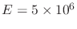
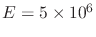

Next: 3.9 Further reading and Up: 3. Fundamentals of Solid Previous: 3.7 Multiphysics problems Contents
 in clockwise direction:
in clockwise direction:
Notes: Compare your solutions with expectations of the US stress map (https://www.usgs.gov/media/images/new-us-stress-map). You may use Python, Matlab, Wolfram Alpha (https://www.wolframalpha.com/), or a calculator that supports linear algebra to solve this problem.

 in and the sample length was
in and the sample length was  in. The test was conducted in “as received conditions”. The data is available here.
The data contains Time (s), Axial force
in. The test was conducted in “as received conditions”. The data is available here.
The data contains Time (s), Axial force  (lb), Axial displacement
(lb), Axial displacement  (in), and Radial displacement
(in), and Radial displacement  (in).
(in).
 and
and  . Calculate the volumetric strain as well.
. Calculate the volumetric strain as well.
 in Voigt notation) show that by applying an isotropic stress
in Voigt notation) show that by applying an isotropic stress
 (no shear) the volumetric strain is equal to
(no shear) the volumetric strain is equal to
 .
.
 , for a shale rock with
, for a shale rock with
 psi and
psi and  , when subjected to an isotropic change of stress
, when subjected to an isotropic change of stress
 3,000 psi? Write the full (3D) acting stress tensors and resulting strain tensor as matrices 3
3,000 psi? Write the full (3D) acting stress tensors and resulting strain tensor as matrices 3  3.
3.
 ?
?
in Voigt notation) show that by applying stress in one direction (say 1) and not letting the solid expand in the other two, you can recover the following expression
 .
.
 . Is it lower or higher than E? What is the physical explanation?
. Is it lower or higher than E? What is the physical explanation?
 matrices.
matrices.
 . Provide answers in
. Provide answers in  sip.
sip.
 =0.22 and that horizontal strains are nearly zero.
=0.22 and that horizontal strains are nearly zero.
 , tectonic strains are
, tectonic strains are
 and
and
 , and the shale Young’s modulus is
 psi.
, and the shale Young’s modulus is
 psi.
![\begin{displaymath}\underset{=}{\sigma} =
\left[
\begin{array}{ccc}
\sigma_{NN} ...
...-200 & 7300 & 0 \\
0 & 0 & 8100
\end{array} \right] \text{psi}\end{displaymath}](img518.svg)
![\begin{displaymath}\underset{=}{\sigma} =
\left[
\begin{array}{ccc}
\sigma_{NN} ...
...
100 & 6300 & 0 \\
0 & 0 & 6200
\end{array} \right] \text{psi}\end{displaymath}](img519.svg)